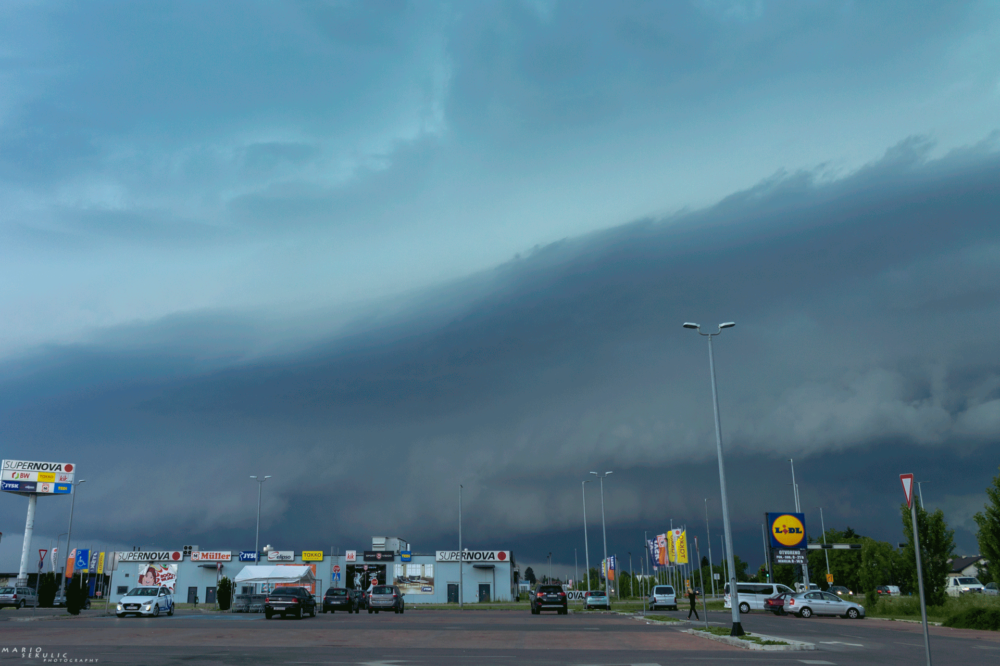

Sredinom dana su se već razvijale jače oluje u Sloveniji, a jedna od njih je ušla na teritorij Hrvatske u zagorju. Ipak po modelima se najjača oluja očekivala u središnjoj Hrvatskoj i ja sam čekao da krene njezin razvoj. U 14:45h jedna ćelija je naglo buknula tik istočno od Karlovca i to je bio moj početak chase-a iz Zagreba.